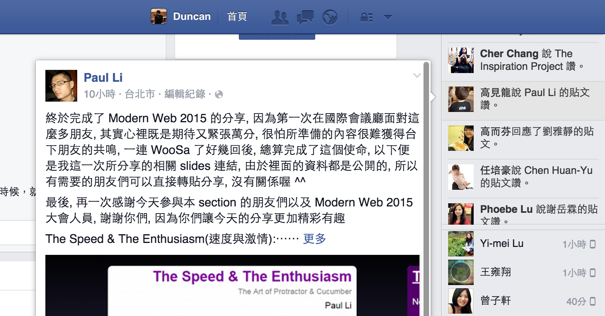
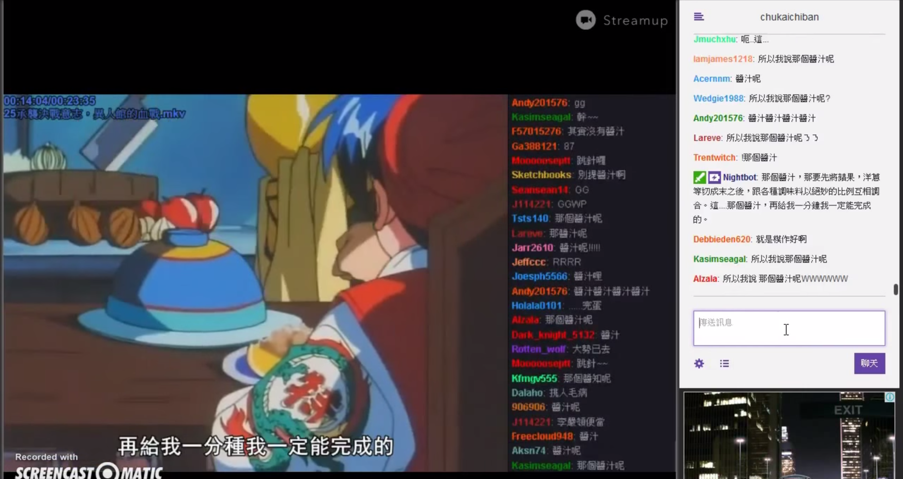
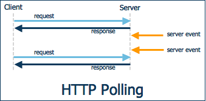
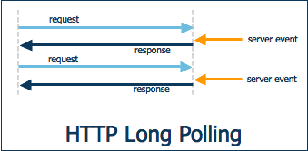
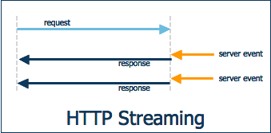
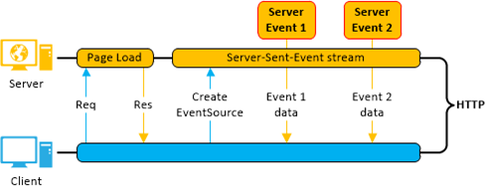

Web 的即時互動怎麼玩？
拿來做即時線上遊戲吧！
Duncan Hsieh

理事 @ 台灣互動設計協會
資深 經理 雜工
realtime
讓觀眾用 Web App
與電視內容 即時互動
即時互動 聽起來很玄！
對，老闆就想靠這招打天下！
創業哪有那麼簡單
即時(Real-time) 能玩什麼?
實況遊戲
實況遊戲

即時通知
動態消息
共同創作
聊天
先來談談 聊天室 怎麼做?
我第一次寫的聊天室大概長得像這樣子
阿，不小心暴露年紀
為了不讓大家睡著，這是唯一的 code
<head>
<meta http-equiv="refresh" content="5">
</head> 用每 5 秒 reload 的方式做 Polling
想像一下當網站變大的時候會怎麼樣
- 假設平均同時有 10,000 個使用者在線上
- 每 5 秒鐘重新整理一次網頁
- 1 小時就會有 7,200,000 次 request
- Server 就要 check session + Query DB 同樣次
Real-time 的核心概念
有一個可以持續不斷線的連線方式，就可以減少系統負擔
HACK Solution
HTTP Polling
HACK Solution
HTTP Long-Polling
HACK Solution
HTTP Streaming
HTTP Solution
Server-Sent Events
基於 HTTP 的標準協定，不用再使用 Hack 的方法了
可是 IE 永遠不支援
Socket Solution
WebSockets可以在 Browser 與 Server 之間，建立雙向、全雙工的持續連線
很不幸的
- 舊的瀏覽器可能不支援新的標準
- 防火牆(企業內網、學校內網)
- Proxy
- 3G/4G連線
不同的技術有他的優缺點
效能
HTTP PollingHTTP Long-PollingHTTP StreamingServer-Sent EventsWebSockets相容
Real-time Framework 解決工程師心中的痛
- Fallback 處理相容性
- Scaling 最佳實務
- 開源社群持續維護
已經開始用 socket.io 請舉手
要做 Real-time Web 第一個想到的就是
socket.io ?
不一定，要評估功能來選擇適當的方案
如果你不想花太多時間處理
- Scaling 和 Proformance
- SLA 與 Fallback
- Security 和 ACL
使用現有的 Cloud Service
- 處理 Real-time 有很多眉眉角角，不要自幹
- Google 或 stackoverflow 容易找到解決方法
- 等到免費的 quote 用完或達到經濟規模再自幹也不遲
開始之前
- 支援你熟悉的語言
- 是否有 Native Mobile App 開發需求
- 資訊架構與資料互動的方式
開始一個線上遊戲專案
遊戲中的通知
- Real-time 技術中最基礎的功能 Simple Messaging
- 一對一單向資料傳輸
- 可以用來實作需要即時收到資料、通知的功能
- Cloud Service
- Self Hosted
聊天室
- Real-time 技術中最常見的功能 Pub/Sub
- 訂閱特定 Channel( or Topic or Subject)
- Cloud Service
- Self Hosted